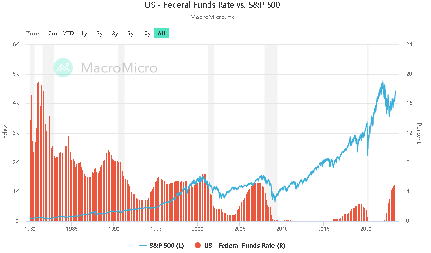
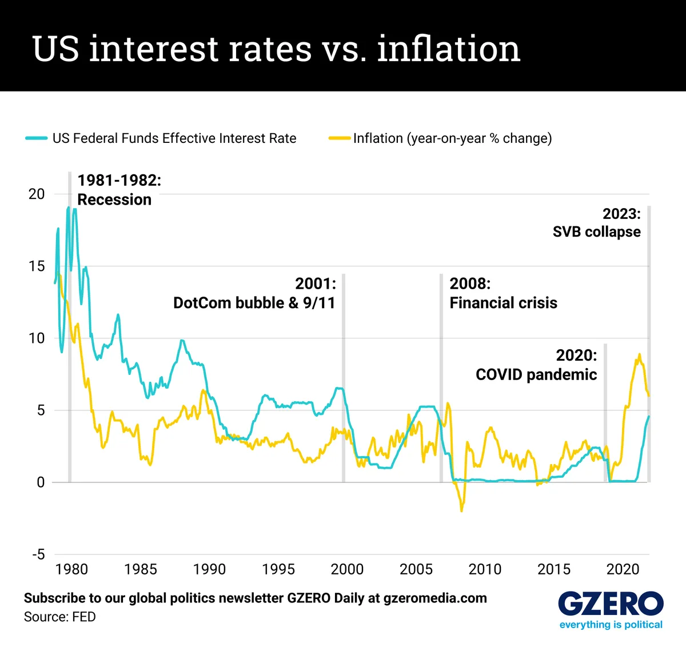
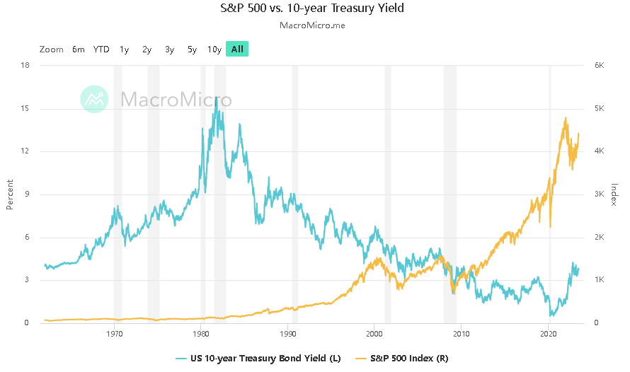
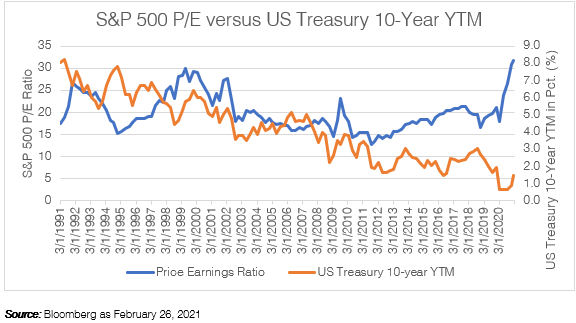

Hello Everyone!
I’m Hieu


Correlations between interest rates and the stock market
The relationship between the stock market and monetary policy, particularly interest rates, has been a subject of great interest and examination among economists, policymakers, and investors. Recognizing and comprehending the intricate connections and interactions between these vital elements of the economy is crucial for making informed decisions and managing risks in financial markets. This article aims to extensively analyze the correlation between the stock market and monetary policy, particularly emphasizing the impact of changes in interest rates on stock market performance.
In the 1980s and 1990s, monetary policy played a significant role in shaping the economic landscape and influencing the relationship between interest rates and the stock market. During this period, the US Federal Reserve implemented a consistent and deliberate approach to monetary policy, with a primary focus on combating inflation. Inflation had been a major concern in the 1970s, and the central bank took decisive action to bring it under control.
One of the key tools used by the Federal Reserve to combat inflation is the federal funds rate. The federal funds rate is the interest rate at which banks lend to each other overnight, and it serves as a benchmark for other interest rates in the economy. By adjusting the federal funds rate, the Federal Reserve can influence borrowing costs, investment decisions, and overall economic activity.
In the 1980s and 1990s, the Federal Reserve pursued a policy of gradually decreasing the federal funds rate to stimulate economic growth and control inflation. This gradual easing of monetary policy was aimed at providing accommodative conditions for businesses and consumers to access credit and invest, thus spurring economic expansion.
As the Federal Reserve lowered the federal funds rate, borrowing costs declined, making it cheaper for businesses to borrow money for investment purposes. This, in turn, contributed to the expansion of economic activity and supported the growth of corporate profits. The prospect of improving economic conditions and rising corporate earnings likely boosted investor sentiment and drove the stock market higher.
The declining federal funds rate during the 1980s and 1990s, coupled with the accommodative monetary policy stance, created an environment conducive to stock market growth. Lower interest rates made stocks more attractive compared to other fixed-income investments, as they offered the potential for higher returns. As a result, investors directed their funds into the stock market, leading to the upward trajectory of stock prices.
However, it's important to note that monetary policy is not the sole driver of stock market performance. Other factors, such as economic fundamentals, corporate earnings, investor sentiment, and external shocks, also influence stock market dynamics. Therefore, while the declining federal funds rate during the 1980s and 1990s may have contributed to the stock market's positive performance, it's crucial to consider the broader economic and market conditions during that period.
 The U.S. pursued a policy of low-interest rates during the period following the global financial crisis of 2008. In response to the economic downturn and to stimulate economic growth, the Federal Reserve implemented a series of measures to lower interest rates. Investors price their investments based on the prospects of economic growth. Therefore, historically, there has been an observed inverse relationship between stock prices and interest rates in the US. As interest rates rise, stock prices tend to move lower. This pattern suggests that as investors anticipate future economic growth and interest rates increase, they adjust their expectations for corporate earnings and profitability. This adjustment in expectations can lead to a decrease in stock prices. This negative relationship is evident in the regression analysis between the S&P 500 Index and the US Treasury 10-Year yield to maturity since 1991. The analysis reveals that as the yield on the 10-Year Treasury bond rises, the S&P 500 Index tends to decline in value. Understanding the intricacies of this inverse relationship requires a deeper exploration of how stocks are valued at the company level, considering factors such as discounted cash flow analysis, cost of capital, investor preferences, and economic growth expectations.
When exploring the relationship between stocks and interest rates, it's important to consider two key factors that play a significant role in shaping this dynamic. The first factor revolves around how investors value companies. At its core, the valuation equation is relatively straightforward: it involves estimating a company's future cash flows and discounting them by the company's cost of capital. The cost of capital typically includes a spread, or additional yield, over US Treasury rates. This spread is adjusted based on the creditworthiness of the borrower.
Lower US Treasury rates tend to result in a lower cost of capital for companies. This, in turn, increases the present value of their stock prices. When interest rates are low, companies can borrow money at cheaper rates, reducing their overall cost of capital and potentially leading to higher stock valuations.
The second factor influencing the relationship between stocks and interest rates pertains to the availability of alternative investment opportunities. As interest rates decline, investors often seek higher-returning assets to compensate for the lower potential future returns in bonds. This search for better investment options can lead investors to allocate more capital to stocks, which can drive up stock prices.
Conversely, as interest rates start to rise, more risk-averse investors may choose to invest in bonds, as their yields become more competitive compared to stocks. This shift in investor behavior, driven by rising interest rates, can put downward pressure on stock prices.
As we assess the current market landscape, it is crucial to understand the historical relationship between stocks and bonds and how it has evolved. Looking at the correlation between stock valuations, as represented by the S&P 500 Index price-to-earnings ratio (P/E), and the US Treasury 10-Year yield to maturity, we can observe that they have not always moved in perfect synchronization. Although US interest rates have generally trended downward since the early 1990s, the inverse relationship between interest rates and stock valuations has not always played out as expected.
Throughout history, there have been specific events that disrupted the typical relationship between stocks and bonds. For instance, the "internet bubble" in 2001 and the "Great Financial Crisis" in 2008 resulted in lower stock prices despite declining interest rates. These idiosyncratic events highlighted that other factors, such as market sentiment and economic conditions, can significantly impact stock valuations.
In response to the global financial crisis, central banks around the world implemented unprecedented monetary policy measures to revive the economy. These actions led to a significant reduction in interest rates across major developed markets, resulting in higher stock valuations. The period starting in 2009 saw a notable increase in stock prices due to the lower cost of capital resulting from central banks' efforts to lower interest rates. However, the relationship between stocks and bonds experienced a shift in 2013 when the Federal Reserve initiated the reduction of its open market bond purchases, known as Quantitative Easing. This move led to higher US interest rates and a phenomenon referred to as the "taper tantrum." Despite the increase in bond yields during this period, stock valuations remained relatively unchanged.
In late 2016, the Federal Reserve started gradually raising the Federal Funds rate in an attempt to normalize interest rate markets. This further influenced the relationship between stocks and bonds. By late 2018, as bond yields became more attractive to investors, there was a rotation out of stocks and into bonds, resulting in lower stock valuations. The relationship between stocks and bonds, particularly concerning interest rates, is a complex one. However, it is widely recognized that interest rates play a crucial role in the stock valuation equation and can serve as an indicator of investors' risk appetite in the market.
If interest rates continue to rise gradually, it can be interpreted as a positive sign for the economy, indicating ongoing improvements. In such an environment, companies may have the potential to grow their earnings, which can benefit stock prices.
However, it's crucial to monitor the magnitude of any future increase in interest rates. A significant and abrupt rise in rates could lead to heightened stock market volatility as investors reassess and readjust their valuations of companies. Such rapid shifts can have implications for portfolio performance and risk exposure.
While it is impossible to accurately predict the future movement of interest rates, it is prudent for investors to regularly evaluate their current asset allocation positioning in relation to their long-term objectives. Assessing market risks and making adjustments to portfolios can help protect investments and align them with strategic targets.